All 24 pieces swept from art/jobs/t32_cobble_203.json. The border is the sweep's own rim (two pixels of the paving at 0.78), not anything the model drew. Every straight exit is the same 32 px band and every diagonal the same corner triangle, which is why any piece joins any other -- these runs are the proof of it.
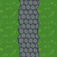
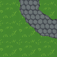
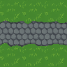
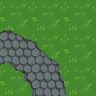
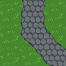
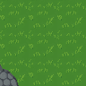
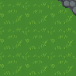
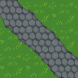
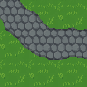
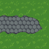
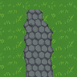
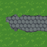
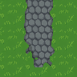
straights
curves
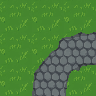
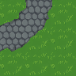
diagonals
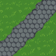
straight-to-diagonal joins
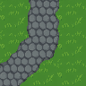
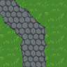
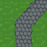
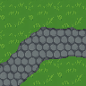
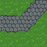
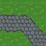
corner companions
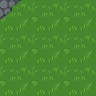
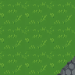
ends (new)
Where a non-priest class buys the knowledge of magic. An augur read a quartered region of sky, and templum was his word for it, so the precinct is roofless on purpose. The figure is a state priest with the lituus and a raven -- deliberately unlike the Sibylla class portrait, which is a veiled priestess in white, so the oracle and the player are never the same figure.
The figure stands where the pack places him, in the backdrop’s own 240×102 units, so he lands on the same spot at any scale.
the location layout: backdrop at 3×, 24 px cropped each side, 672×306; figure at 144×144
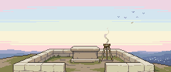
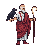
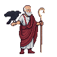


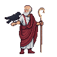
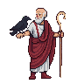

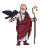
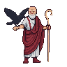
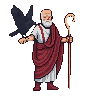
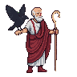

The raven spreads its wings, beats once and folds them while the augur turns to watch: a bird’s sign is what an augur reads. Played forward then back, so no step is a jump the model did not draw; on disk the 14 frames are a plain numbered run, 08–13 copies of 06 down to 01.

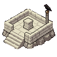